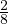

Suhe on kahe arvu jagatis ja seda saab väljendada protsentides. Näiteks
 = 25%.
Võrdeliseks seoseks nimetatakse muutujate võrdelisust. Muutujat y nimetatakse
võrdeliseks muutujaga x, kui nende muutujate kõikide väärtuste korral kehtib seos
y = ax, kus a on nullist erinev konstant.